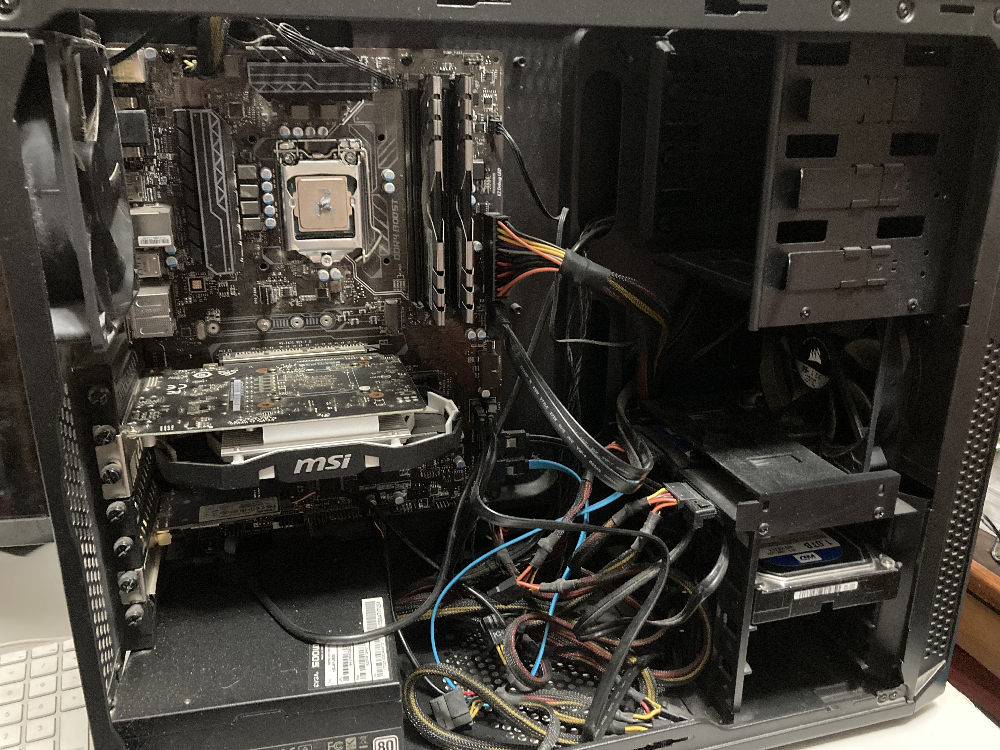
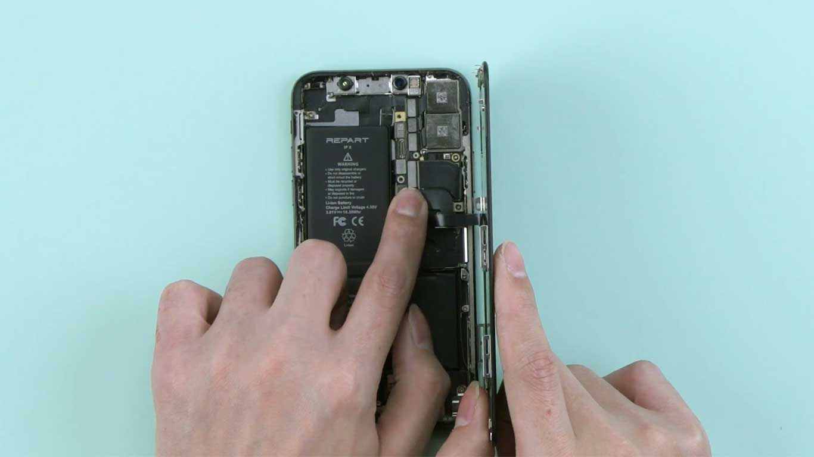

Projects
Builds and system setups

Custom PC Build and Linux Migration
Hardware BuildBuilt computer from scratch including selecting components, assembling it, installing Windows then later switching to Linux, and much troubleshooting.

ROG Ally Battery Replacement (74Wh Upgrade)
Problem: Limited battery life affecting device usability (Dies after 40 minutes of Red Dead Redemption 2).
Work: Disassembled device, replaced internal battery with high-capacity unit, reassembled and calibrated battery.
Result: Significantly improved battery life (Nearly double)
Repair Log
Diagnostics and hardware repairs

CPU Overheating Fix (Thermal Paste Replacement)
Diagnostics & RepairProblem: Desktop CPU was overheating severely, somehow reaching ~100°C in BIOS.
Diagnosis: Determined likely thermal paste failure or poor heat transfer between CPU and heatsink.
Work: Removed CPU cooler, cleaned old thermal paste, applied new thermal compound, and reinstalled cooling fan.
Result: CPU temperatures returned to normal operating range and system stability was restored, computer did not burst into flames.

iPhone Screen & Battery Replacement
Mobile RepairProblem: Broken touch screen and degraded battery performance.
Diagnosis: Device damage identified as both display failure and battery wear.
Work: Replaced screen assembly and battery, then tested touch response and battery calibration.
Result: Fully restored device with functional display and improved battery life.
Technical Development
I am currently learning HTML, CSS, JavaScript, and computer science fundamentals while building personal projects (such as this website and a physics-based sandsfalling game) and expanding my technical portfolio.
Contact
If you're hiring for hardware repair, IT support, or entry-level dev work, feel free to reach out.
Email: enoch.sterling.gurr@gmail.com
GitHub: github.com/enoch206